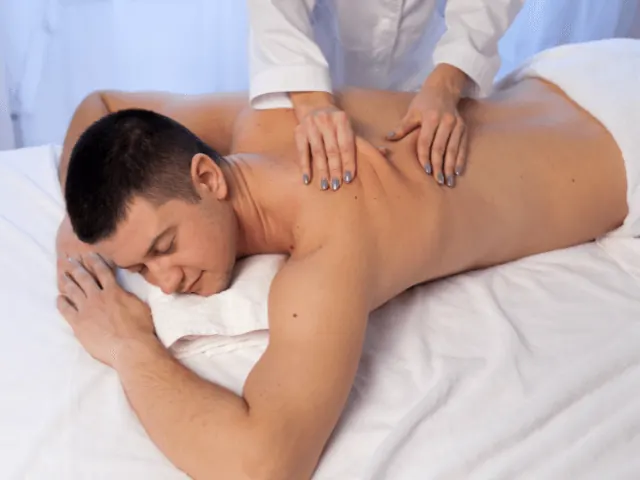
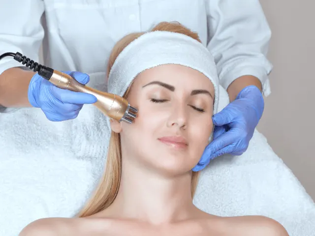

Ontspannen en herstellen: Wat je kunt verwachten bij een massagesalon in Nijmegen
Gepubliceerd op 28 augustus 2023, bijgewerkt op 14 februari 2025
Onderdeel van de gids Massage in Nijmegen
Welkom in de wereld van ontspanning en herstel, waar je stress wordt weggemasseerd en je spanning verdwijnt. Kies een massagesalon in Nijmegen en geef jezelf de kans om volledig onder te dompelen in een oase van rust en verwennerij. Laat me je meenemen op een reis naar de wonderlijke wereld van massage. En bekijk de salons eens die we graag willen tippen!

De magie van aanraking: Een helende reis voor lichaam en geest
In onze drukke levens vergeten we vaak hoe belangrijk het is om even stil te staan en onze batterijen op te laden. Een bezoek aan een van de massagesalons die Nijmegen rijk is, geeft je de mogelijkheid om te ontspannen en te herstellen. Met ervaren masseurs en masseuses die de kunst van aanraking tot in de puntjes beheersen, word je meegenomen op een helende reis voor lichaam en geest. Van diepe weefselmassages tot zachte strelingen, elke aanraking is doordrenkt met zorg en aandacht. Je zult versteld staan van de kracht die uitgaat van deze magische handen!
Een paradijs van zintuiglijke verrukkingen: De ambiance van rust en luxe
Stel je voor: je betreedt een massagesalon in Nijmegen en wordt met open armen ontvangen in een oase van rust en luxe. Zachte muziek vult de ruimte, kaarsen geven een warme gloed en de geur van aromatische oliën prikkelt je zintuigen. Hier is alles erop gericht om je ervaring tot een onvergetelijke te maken. Van het comfortabele massagebed tot de zachte handdoeken, elk detail is met liefde gekozen. Sluit je ogen, adem diep in en laat je meevoeren.
Een weldaad voor je lichaam: De diverse massagetechnieken
Bij de vele massagesalons in Nijmegen vind je een scala aan massagetechnieken die aan kunnen sluiten bij je behoeften. Van de verlichting van spierspanning tot het bevorderen van de bloedsomloop, elke massage is afgestemd op wat je lichaam nodig heeft. Ontdek de dieptes van een diepe weefselmassage, laat je meevoeren door de vloeiende bewegingen van een Zweedse massage of geef je over aan de genezende kracht van een Thaise massage. Het is een weldaad voor je lichaam die je energie doet stromen en je vitaliteit herstelt.
Een investering in je welzijn: Het belang van self-care
In ons drukke bestaan vergeten we soms dat self-care geen luxe, maar een noodzaak is. Een bezoek aan een van de massagesalons in Nijmegen is meer dan alleen een verwennerij; het is een investering in je welzijn. Door regelmatig tijd vrij te maken voor ontspanning en herstel, geef je jezelf de kracht om weer in balans te komen. Laat de stress van alledag van je afglijden, geef jezelf de aandacht die je verdient en voel hoe je batterijen weer worden opgeladen. Je bent het waard!

Top Tips voor een geweldige ervaring in een Massagesalon in Nijmegen!
Nick’s Relaxmassages
Bij Nick’s Relaxmassages draait alles om pure ontspanning en welzijn. Nick biedt professionele ontspanningsmassages aan die helpen stress te verminderen, spieren los te maken en lichaam en geest in balans te brengen. Of je nu toe bent aan een moment voor jezelf of verlichting zoekt na een lange dag, bij Nick ben je in goede handen. Ervaar rust, hernieuwde energie en complete ontspanning in een sfeervolle en comfortabele omgeving.
Gun jezelf een weldadige massage en kom helemaal tot rust bij Nick’s Relaxmassages!
Siam Thaise Massage
Met een warme en gastvrije sfeer verwelkomt Siam Thaise Massage je in hun serene salon. Geniet van traditionele Thaise massagetechnieken die zorgen voor diepe ontspanning en verlichting van spierspanning. De ervaren masseurs zorgen voor een professionele en doeltreffende behandeling.
Laai Thai Massage
Bij Laai Thai Massage kun je rekenen op een rustige en intieme omgeving waar ontspanning centraal staat. Met een scala aan massagebehandelingen, waaronder traditionele Thaise massages en aromatherapie, vind je hier de juiste balans voor lichaam en geest. Laat je verwennen door de zachte aanrakingen en verlaat de salon met vernieuwde energie.
Manibus Massagepraktijk
Manibus Massagepraktijk staat bekend om zijn persoonlijke benadering en aandacht voor de klant. Met een focus op holistische massages en ontspanningstechnieken, bieden ze een maatwerkbehandeling die aansluit bij je behoeften. Laat de ervaren handen van de masseurs je lichaam en geest in harmonie brengen, zodat je volledig kunt ontspannen en herstellen.
Touch of Thai Wellness Spa
Bij Touch of Thai Wellness Spa kun je een betoverende ervaring verwachten die je meeneemt naar de authentieke Thaise wellness wereld. De spa ademt een serene en rustgevende sfeer uit, waardoor je direct tot ontspanning komt. De deskundige masseurs en masseuses combineren eeuwenoude Thaise massagetechnieken met moderne wellness methoden om je lichaam en geest in harmonie te brengen.
Conclusie
Dompel jezelf onder in de wereld van ontspanning en herstel bij een massagesalon in Nijmegen. Laat de magie van aanraking je meevoeren op een helende reis voor lichaam en geest. Geniet van de rust en luxe van de prachtige ambiance en ontdek de diverse massagetechnieken die aansluiten bij je behoeften. Vergeet niet dat self-care een investering in je welzijn is. Dus geef jezelf toestemming om te ontspannen, herstellen en stralen als nooit tevoren. En als je niet kan kiezen tussen onze tips, dan doe je dat toch niet!